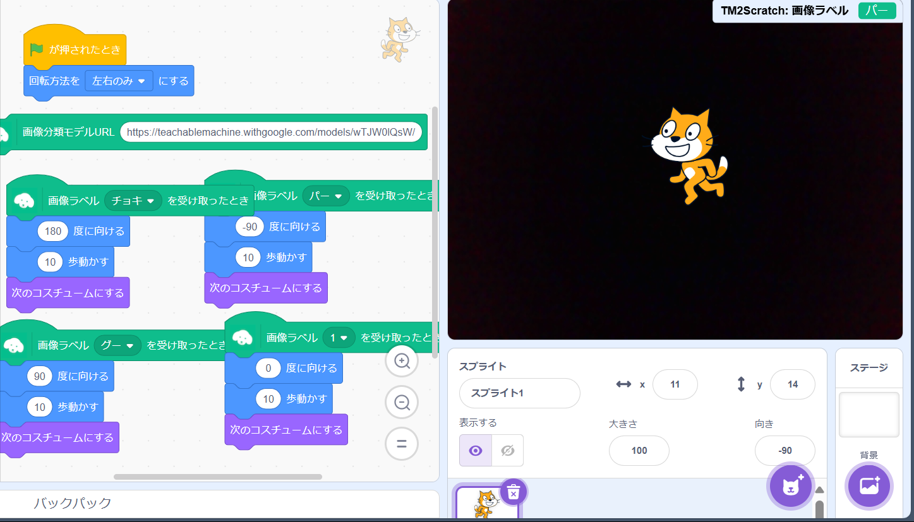
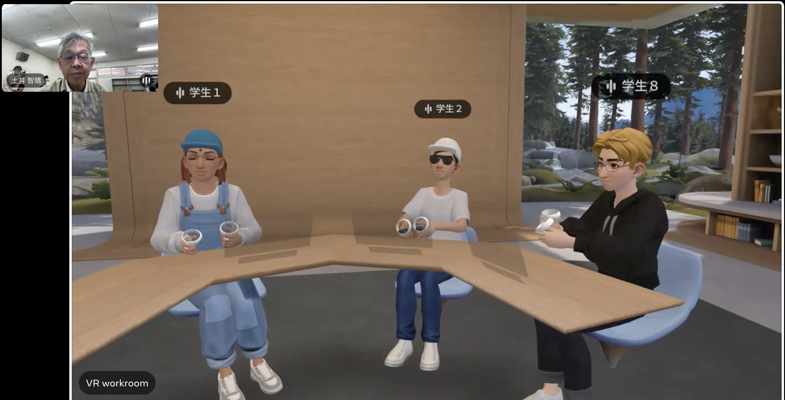
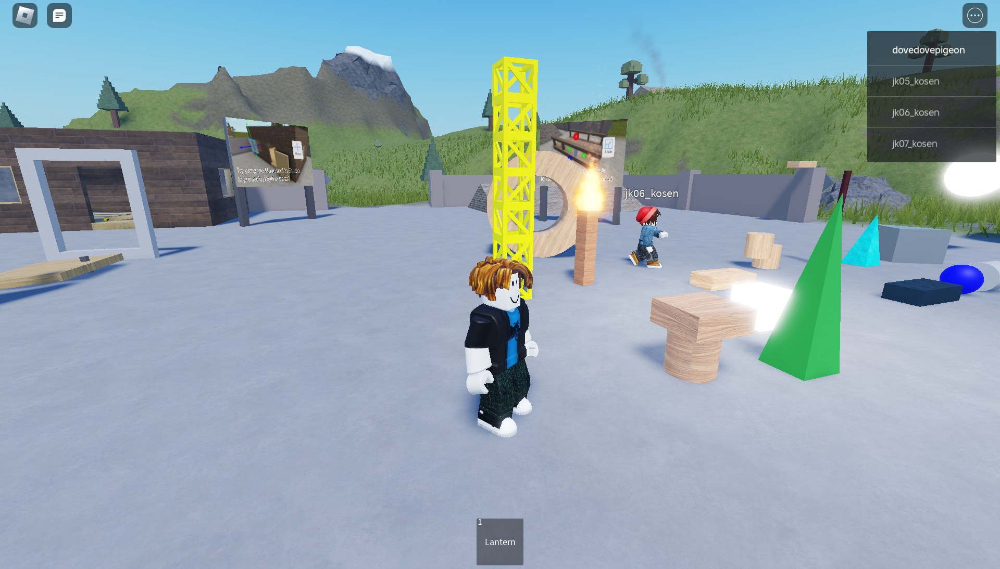

第2週目
2-1 2週目のレポートをHTMLで作る
1.内容
レポートをHTMLで作る(編集する)
2.感想
第1週のレポート用のスクリーンショットが二枚とも初めはちゃんと表示されなかったけど、別のスクリーンショットを貼ると正確に表示されてよかった。写真をアップロードするだけでもちょっとしたことで正確に表示されないことを知って、一つ一つの細かい確認作業がとても大事だと思った。
3. 2週目が完成した人は1週目のレポートも完成させる
2-2 機械学習体験

1.内容
カメラを使ったAIの画像認識を用いたプログラムの作成
2.感想
動作のパターン数を増やすと正確に認識されにくくなっていたため、パターン数が多くても正確に認識されるようにするにはどうすればよかったのかわからなくて悔しかった。
2-3 VR（バーチャルリアリティー：Virtual Reality）会議室の体験


1.内容
Workrooms・RobloxのVR体験
2.感想
Workroomsは初めてのVR体験だったので、お互いに向かい合っていなくても向かい合った状態にVR内ではなっていたことに驚いた。また、音声が耳元でも聞こえていたから本当にいろいろなところでできるなと思った。
RobloxはVR内で友達と協力して動けたりして楽しかった。 Ｗorkroomsは主に上半身を動かしていたけどRobloxは手元でアバターの全身を動かすという動きの違いがVRにもあることが分かった。